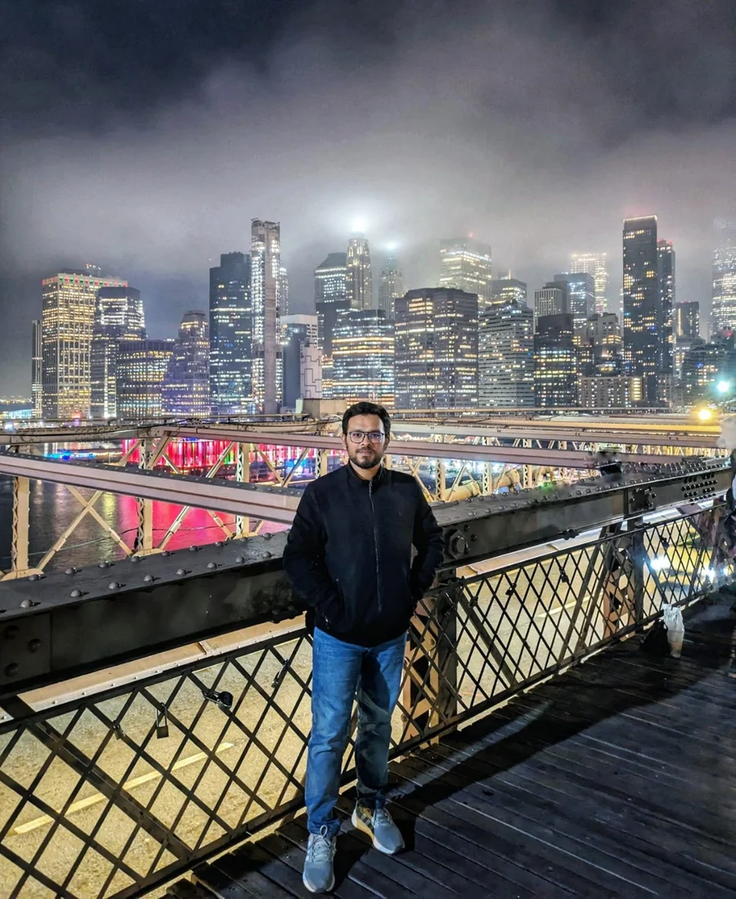

01
Brain-inspired
learning ↗
Exploring learning mechanisms inspired by the brain, with an emphasis on local learning and alternatives to conventional backpropagation.
ALGORITHMSRESEARCHER · TEXAS A&M UNIVERSITY
Howdy, I’m Saquib.
I’m Nazmus Saadat As-Saquib. I explore brain-inspired learning and the hardware that brings it to life.

01 / A LITTLE ABOUT ME
My work lives at the intersection of learning algorithms and physical computing.
My experience with semiconductor materials and device fabrication led me toward hardware–software co-design. At Texas A&M, I study how insights from the brain can inform more efficient ways for machines to learn.
Beyond the lab, I enjoy traveling, spending time with family and friends, and contributing to my community. Those experiences keep me curious—and remind me why the work matters.
More about my background ↗02 / RESEARCH DIRECTIONS
Connecting biological inspiration
with practical computation.
Exploring learning mechanisms inspired by the brain, with an emphasis on local learning and alternatives to conventional backpropagation.
ALGORITHMSInvestigating how emerging memory devices can bring computation closer to stored data and support efficient learning systems.
HARDWAREConnecting device-level constraints with algorithm design, informed by hands-on experience in semiconductor fabrication.
SYSTEMS